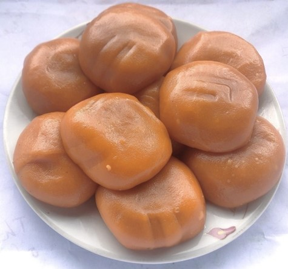

Bánh dày
Bánh dày là một món ăn rất quen thuộc với mỗi người dân Việt. Tại Cao Bằng, ngoài bánh dày trắng truyền thống, để món bánh hấp dẫn hơn, người dân còn sáng tạo nên nhiều loại bánh có màu sắc bắt mắt như màu xanh của ngải cứu, hồng đậm của lá cẩm… Trong đó, món bánh dày làm từ gấc có màu vàng cam, được nhiều người ưa thích hơn cả bởi vị ngọt thơm và nhiều dinh dưỡng.
Gấc là một loại thực phẩm bổ dưỡng, chứa nhiều vitamin A, E, có tác dụng cải thiện thị lực, chống khô mắt, mỏi mắt, phòng trị bệnh về tim mạch, sa sút trí não... Thịt quả gấc thường được dùng để nấu xôi, các bộ phận như lá, rễ, dây, hạt là vị thuốc quý sử dụng làm thuốc chữa bệnh.
Để làm được món bánh dày gấc ngon nhất, trước tiên, cần chuẩn bị loại gạo nếp ngon, vo sạch, ngâm nước khoảng 6 - 8 giờ hoặc qua đêm rồi vớt lên để ráo nước.
Gấc chọn quả chín đỏ, gai thưa và vỏ mỏng, bổ đôi rồi dùng thìa nạo hết phần ruột ra một chiếc âu sạch, bóp nát phần ruột gấc với khoảng 15 ml rượu trắng để tách bỏ hạt, phần thịt gấc ngâm để như vậy qua đêm. Cách làm này sẽ giúp màu đỏ của gấc bền và tươi hơn.
Tiếp đó, trộn gạo và gấc đã ngâm qua đêm với nhau. Cho hỗn hợp vào chõ xôi hấp cách thủy khoảng 30 - 40 phút. Nhằm tiết kiệm sức lực và để bánh mịn hơn, nhiều người còn xát gạo nếp thành bột.
Trong quá trình chờ xôi chín thì chuẩn bị nhân bánh. Công đoạn làm nhân cho bánh khá cầu kỳ. Nếu làm nhân lạc thì rang lạc, giã mịn rồi trộn đường kính trắng. Nhân vừng đen thì rang vừng rồi giã mịn với đường kính trắng. Làm nhân đỗ xanh thì phải đồ hoặc nấu chín đỗ, đem giã mịn và rang lại với mỡ gà để nhân vừa mịn, dậy mùi thơm và ngậy.
Khi xôi chín mềm thì lấy xôi ra giã cho đến khi có được một khối bột nếp chín dẻo quánh. Khi giã dùng chút mỡ bôi lên chày, khi nặn bánh thì bôi mỡ trong lòng bàn tay để không bị dính và bánh thơm ngậy hơn.
Bánh dày gấc với màu sắc vàng cam rất hấp dẫn, có hương vị đặc trưng tự nhiên của gấc hòa quyện với mùi thơm của gạo nếp, bên trong là vị bùi của nhân lạc vừng, vị ngọt của đường kính. Khi ăn, bánh dẻo, mịn, thơm.
Ngày nay, bánh dày gấc không chỉ làm trong dịp lễ, Tết mà còn được người dân làm bán thường xuyên ngoài chợ và trở thành món quà đặc sản cho du khách đến Cao Bằng.